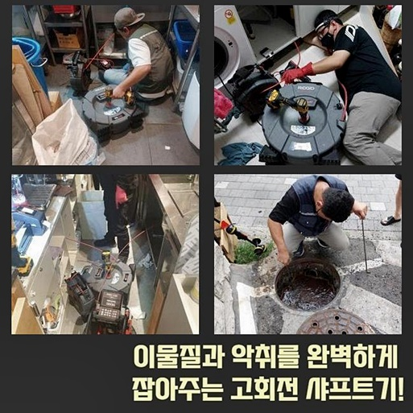
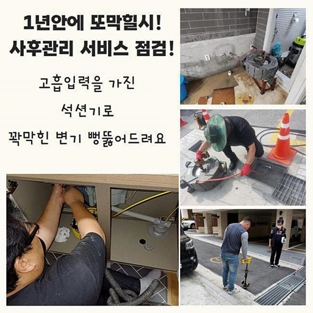
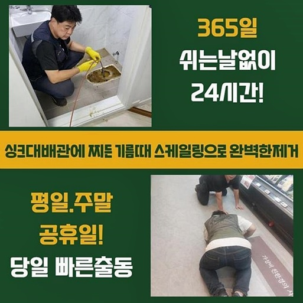
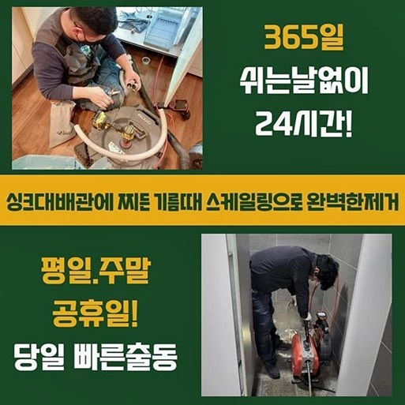
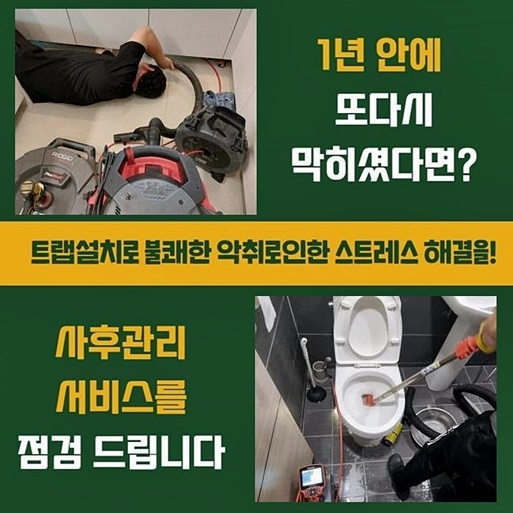
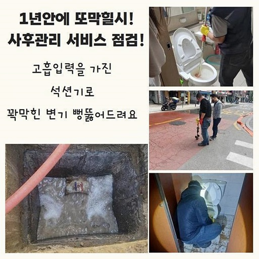
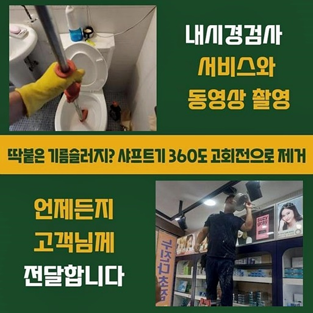

🏠 남양주 이패동오수관뚫음 퇴계원읍 고압세척비용 누수탐지공사
양주 남양 싱크대막힘 전문 시공 후기

📋 작업 개요
- 위치: 양주 남양, 남양, 양주
- 서비스 유형: 싱크대막힘, 하수구막힘, 배관막힘, 누수수리, 역류해결, 뚫는업체, 배관청소, 고압세척, 설비공사
- 작업 일시: 2024. 8. 21. 10:31
- 업체명: 하수구수사대 (010-5615-2118)
🔍 문제 상황
남양주 이패동오수관뚫음 퇴계원읍 고압세척비용 누수탐지공사
막힘증세와 관련해 현장사례들로 알려드리려고하니 훑어보시면 도움이되실거라 생각해요
근래들어 작업했었던 현장사례로 주방쪽에서 배관막힘현상이 발현된경우가 있었죠
씽크대의경우 음식물잔해가 축적되서 막히곤하는데 저희업체는 하수구내부 점검을통해 정확하게 원인이무엇인지 살피고 해결하고있어요
현장을살폈더니 하수도에서 악취까지 나고있었고 물을이용하는것도 어려웠죠
이런상황이라면 하수구쪽에 오염물이쌓여 배수상태가 망가진것으로 판단할수있었죠
이러한것들을 조속하게 처리해드리기위하여 최선을다하여 하수구시공을 진행해볼 예정이에요
확실한 배관세척으로 하수구문제를 바로잡고 의뢰자분의 불편했던점들을 해소시켜 드리도록할게요
고압청소기는 고압수를 통해서 오염물을 제거해냄으로써 세심한 하수구청소가 가능하답니다
이물이축적된 배수관을 깔끔히 청소할때 활용하고있는데 앞서말씀드린 장비의경우 배수관환경에서 발생할수있는 정체증상을 처리하는데 효율적이에요
하수구세척을 진행하게될때 주변환경에 피해받지않게 큰비닐을 보존하여 피해받지않도록 예방해드리고있어요
최첨단장비들로 배관기능의 무리가가지않게 하고있고 확실히 사용되도록 기여하고있죠
배관들은 곳곳마다 설치가되어 있겠지만 이어져있으므로 배관막힘이 많이일어납니다

🔎 원인 분석
💡 전문가 진단: 정밀 진단 장비를 사용하여 슬러지의 고착 여부를 판명하고 타격/세척 작업을 실시했습니다.
하수구주위를 들여다보니 모발들과 각종이물이 퇴적된상태임을 체크할수있었어요
이런상황이면 하수구카메라를 써서 세밀한 검수과정이 필요하겠습니다
메인관은 물길쪽이 일부로 확보가된 상황이지만 공간자체가 부족하다보니 물이빠지는것에 영향을입히고 있었답니다
전체적으로 점검해본결과 간단한 오염물파쇄 도구보다는 고압청소장비가 효율적일거라고 판단되었어요
고객분에게 동의를얻고 신속한 스케일링작업을 시작할수가 있었는데요
하수구카메라를 활용하여 하수관안을 확실하게 체크할수있습니다
오염물로인해 배수관이 막혀버렸다면 이물을 청소하는 세척작업이 필수라고 할수있죠
세척하는작업을 올바르게 진행하지못하면 하수도내부에 기스가생기며 결국엔 2차피해가 일어날수있죠
저희업체에서는 경력이풍부하신 전문기사들이 현장을 방문하여 검수과정을 수행하다보니 하수구에 손상이생길까봐 염려는 접어두셔도 괜찮아요
석션장비는 이물을흡입해 소거하는 장비인데요
석션과정으로 하수구속에 자리잡고있는 잔여물들을 흡입시켜 문제의증상을 살필수있답니다
샤프트장비는 잔해물들을 배관벽면에서 떼어내고 고착물들을 분해하는데 사용되고있습니다
이후엔 내시경검수를 거쳐서 하수구안쪽을 살핀후 적절히 조치할예정이죠

🔧 작업 과정
배관카메라로 배관속을 살피는단계는 막힌이유에 대하여 파악하려면 거쳐야되는 과정인데요
카메라검수를 진행해보았더니 막힘의이유가 이물질로인해 막혀버렸다는것을 알아낼수있었네요
내시경장비끝에 작은촬영기가 달려있으므로 사람의눈으로 살펴볼수없는 장소에 활용하고있죠
막혀있는지점과 이물의특징을 확실히 살필수가있어요
배관카메라로 인해서 수립계획을 정하는데있어 도움이됩니다
그렇기에 막히는현상이 일어나게되었다면 내시경도구를 써서 확실히 점검해보는게 중요하겠습니다
오염물을 없애기위해 전문장비를 구비하여 하수구에서 발현된문제를 처리해보려고해요
한번더 말씀드리는것으로 샤프트장비노즐 끝쪽에 달려있는사슬이 빠른속도로 회전해 내부깊은곳의 고착물질들을 갈아내줘요
저희들은 작업계획에있어 투명하게 공개하여 의뢰인께서 수리방법의 필요성에있어 이해시키고 신뢰가가도록 신경쓰고있어요
하수구작업에 착수하게될때 전문인이아니라면 오히려하수구에 파손문제를 발현시킬수있기에 조심해주시길 바랍니다
전문가에게 맡기시면 별걱정없이 풍부한 현장경험을 토대로 문제가해결되면 2차피해가 일어날일이 없도록 해결되실겁니다
다음장소로는 욕실배수구가 막혀버린 현장에내방했죠
이번현장도 오염물질들로 인해서 문제가생긴 장소였어요
분해전용장비 샤프트기를 사용하기로 결정했답니다
퀴퀴한냄새도 동반하고있는 상태이므로 하수구물길을 확보하여 진행하고자했어요
가장효과적인 수리가진행될것을 예측할수있었네요
장시간 많은잔해물이 하수관안에 쌓이게되면서 막히게된것을 확인했습니다
재차 강조하지만 전문기술이 없을경우 어떤문제로인해 막혀버린것인지 정확한 판단을하기가 어렵겠습니다
그렇기에 저희와같은 전문업체의 도움을 받아보셔야해요
빠른시일안으로 문제를타파해 쾌적한하수구로 제공해드릴게요!
재발문제로 곤란하지않게끔 예방을하는 방법까지도 진행해보겠습니다


✅ 작업 완료
고객의편리를 먼저신경쓰는 서비스로 제공할게요
완벽한 하수구상태로 유지해드리고자 최선을다할게요
방치하게될경우 역류나누수같은 현상으로 이어질수있으므로 막힘징조가 나타나게되었을때 대처하시는것이 좋겠습니다
전국어디든지 1시간안팎으로 도착할수있고 최첨단도구들까지 보유하고있으니 편하실때 문의주세요
이것말고도 궁금증이 풀리지않으신게 있다면 마음편히 전화주신다면 친절히 응대해볼게요!
앞으로생길 하수구문제 저희들과같이 해결해봅시다!저희와같이 잡아나가봐요




⚠️ 베란다 누수 및 방수 관리 방법
- ✅ 비가 많이 올 때 창틀 주변이나 아래층 천장에 얼룩이 생기는지 정기적으로 확인해 보세요.
- ✅ 우수관 주변 실리콘 마감이 들뜨거나 깨진 틈새가 있는지 손상 여부를 수시로 체크하세요.
- ✅ 베란다 바닥 타일의 줄눈(메지)이 소실되면 그 틈으로 물이 침투하여 누수가 유발됩니다.
- ✅ 누수 의심 증상 발견 시 방치하면 아래층 손실이 커지므로 즉시 전문가의 진단을 받으십시오.
💡 핵심 정리
- 확실한 장비 작업(내시경 점검 및 샤프트 스케일링)으로 원인을 뿌리 뽑습니다.
- 작업 후 1년 이내에 동일한 부위 재발 시 100% 무상 A/S 서비스를 보장합니다.
- 서울 · 경기 · 인천 전 지역에 24시간 언제든 긴급 출동할 수 있도록 항시 대기 중입니다.
❓ 자주 묻는 질문 (FAQ)
🚨 양주 남양 싱크대막힘 문제로 고민이신가요?
정확한 원인 진단과 확실한 시공으로 재발 없는 해결을 약속드립니다.
24시간 긴급 출동 | 서울 · 경기 · 인천 전지역 | 1년 내 재발 시 무상 A/S